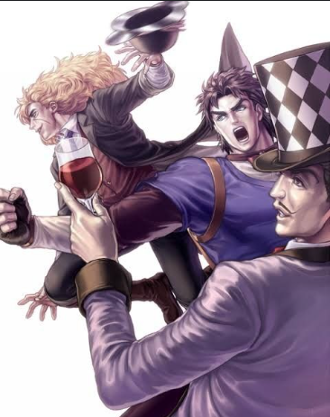
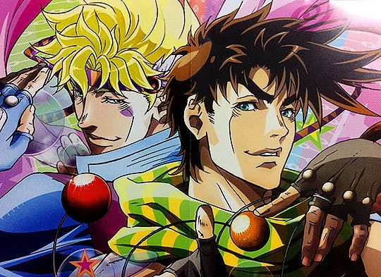
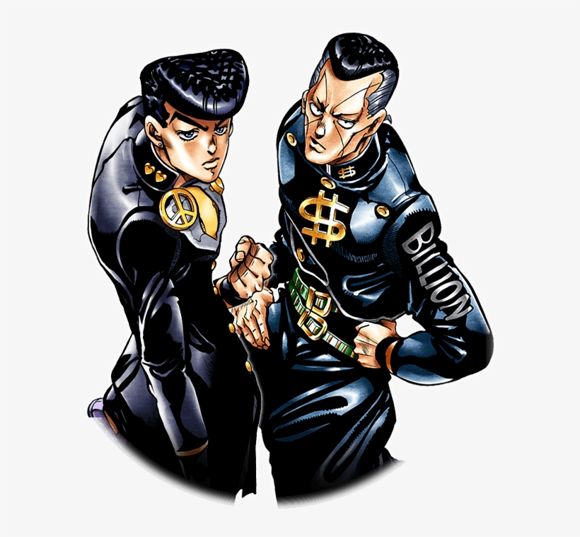
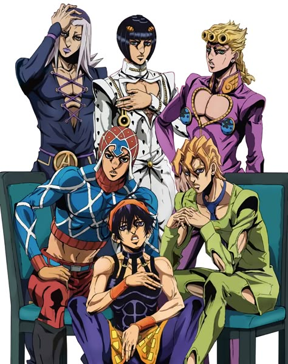
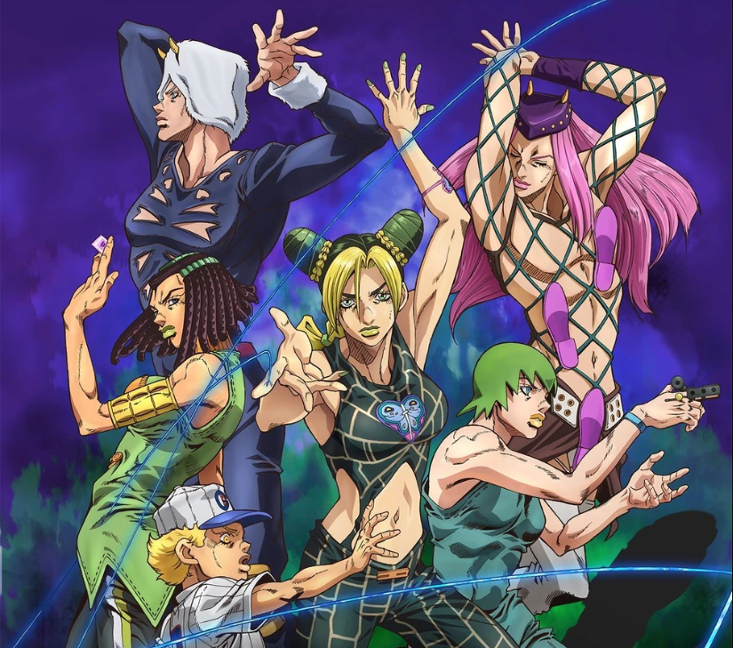
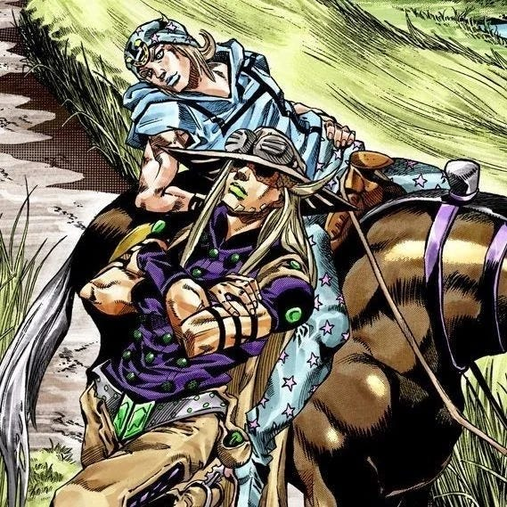
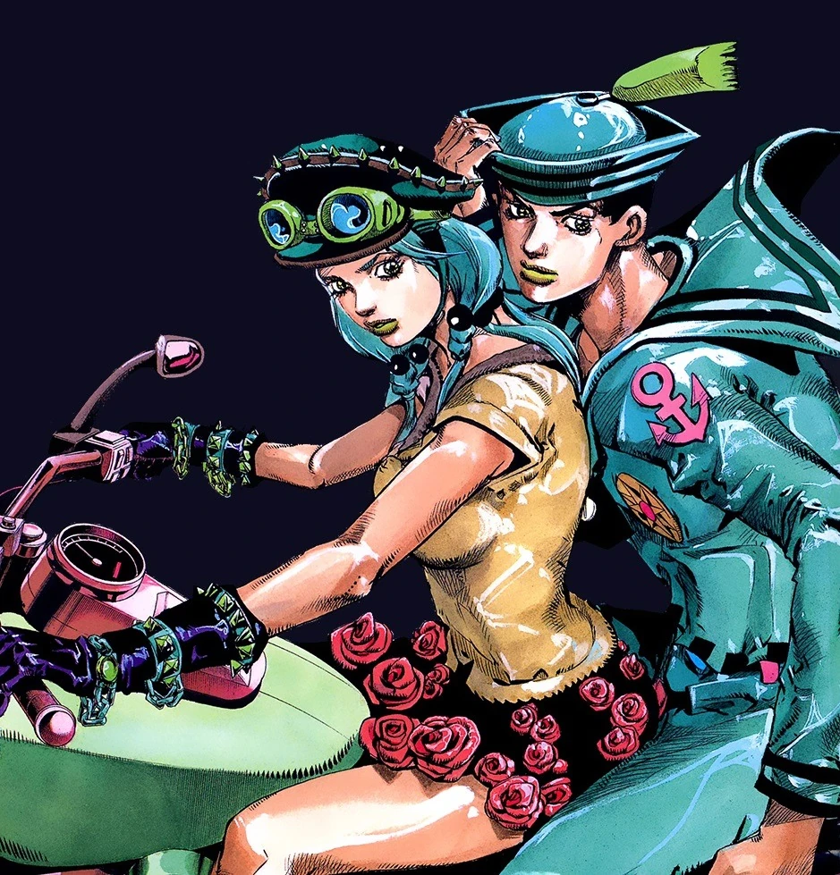
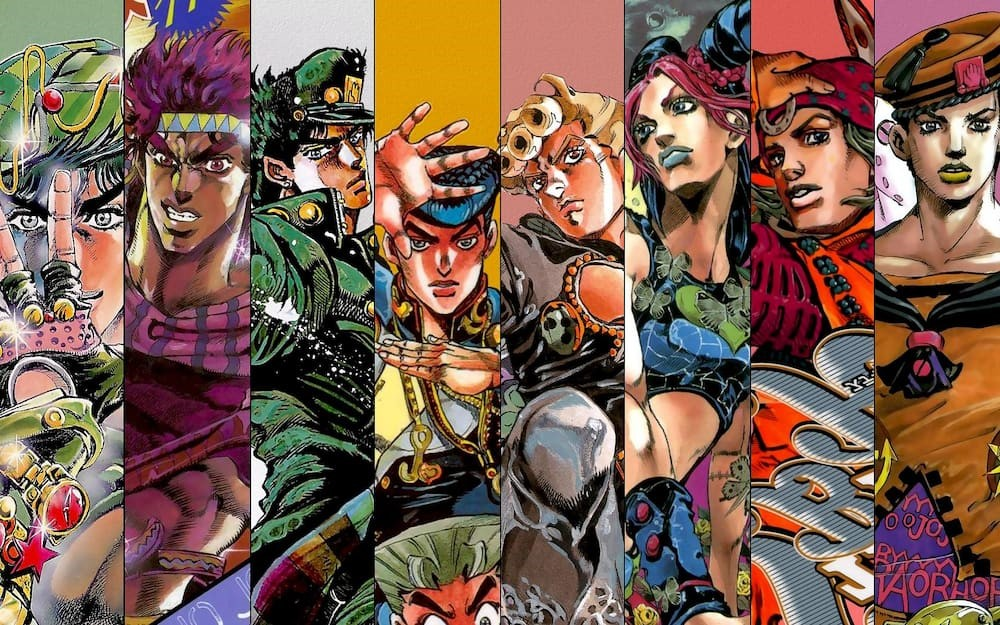

PERSONNAGES

- Jonathan Joestar
- Robert E. O. Speedwagon
- William Antonio Zeppeli

- Joseph Joestar
- Caesar Antonio Zeppeli

- Jotaro Kujo
- Joseph Joestar
- Kakyoin Noriaki
- Mohammed Abdul
- Jean-Pierre Polnareff
- Iggy

- Josuke Higashikata
- Okuyasu Nijimura

- Giorno Giovanna
- Bruno Bucciarati
- Guido Mista
- Narancia Ghirga
- Pannacotta Fugo
- Leone Abbacchio

- Jhonny Joestar
- Gyro Zeppeli

-
Jousuke Higashikata
- Yasuho Hirose

- Jolyne Cujoh
- Narciso Anasui
- Weza Ripoto
- Foo Fighters
- Emporio Alnino
- Ermess Costello
HISTOIRE
Jojo's Bizarre Adventure nous fait suivre l'histoire de la famille Joestar au cours de différentes époques et de multiples lieux .
Au cours des saisons les stands, la matérielisation de la force de l'esprit arrive offrant à chaque personnage même secondaire une particularité unique.
Affrontant diverses antagonistes les "Jojos" offrent 6 saisons animées et 3 saisons encore en manga / scans.
SAISONS
- Saison 1 : Phantam Blood
- Saison 2 : Battle Tendancy
- Saison 3 : Stardust Crusaders
- Saison 4 : Diamond is Unbreakable
- Saison 5 : Golden Wind
- Saison 6 : Stone Ocean
- Saison 7 : Steel Ball Run
- Saison 8 : Jojolion
EPISODES
JoJo's Bizarre Adventure – Épisodes par saison (FR)
| Saison | Épisode | Titre (FR) |
|---|---|---|
| Saison 1 - Phantom Blood (9 épisodes) | ||
| Saison 1 | 1 | Dio l'envahisseur |
| Saison 1 | 2 | Une lettre du passé |
| Saison 1 | 3 | Adolescence avec Dio |
| Saison 1 | 4 | Overdrive |
| Saison 1 | 5 | Chevaliers des ténèbres |
| Saison 1 | 6 | Courage du lendemain |
| Saison 1 | 7 | Le successeur |
| Saison 1 | 8 | Le combat sanglant ! JoJo et Dio |
| Saison 1 | 9 | La dernière onde ! |
| Saison 2 - Battle Tendency (17 épisodes) | ||
| Saison 2 | 10 | JoJo de New York |
| Saison 2 | 11 | Le virtuose du jeu |
| Saison 2 | 12 | L'homme du pilier |
| Saison 2 | 13 | JoJo contre la créature ultime |
| Saison 2 | 14 | Guerriers d'élite ancestraux |
| Saison 2 | 15 | L’aptitude des héros |
| Saison 2 | 16 | Lisa Lisa, coach des ondes |
| Saison 2 | 17 | Le piège parfait ! |
| Saison 2 | 18 | Stroheim contre‑attaque |
| Saison 2 | 19 | Ruée vers la falaise de la mort |
| Saison 2 | 20 | La jeunesse solitaire de Caesar |
| Saison 2 | 21 | Cent contre deux |
| Saison 2 | 22 | Un véritable guerrier ! |
| Saison 2 | 23 | Le guerrier du vent |
| Saison 2 | 24 | Les liens qui unissent JoJo |
| Saison 2 | 25 | La naissance de l’être suprême ! |
| Saison 2 | 26 | L’homme qui devint un dieu |
| Saison 3 - Stardust Crusaders (48 épisodes) | ||
| S2 | 27 | Le possédé |
| S2 | 28 | Qui rendra le jugement ? |
| S2 | 29 | Le maléfice de Dio |
| S2 | 30 | Tower of Gray |
| S2 | 31 | Silver Chariot |
| S2 | 32 | Dark Blue Moon |
| Saison 4 - Diamond is Unbreakable (39 ép.) | ||
| S3 | 1 | Jotaro Kujo rencontre Josuke Higashikata ! |
| S3 | 2 | Josuke Higashikata rencontre Angelo ! |
| S3 | 3 | Les frères Nijimura – Partie 1 |
| S3 | 4 | Les frères Nijimura – Partie 2 |
| S3 | 5 | Les frères Nijimura – Partie 3 |
| S3 | 6 | Koichi Hirose (Echoes) |
| S3 | 7 | Toshikazu Hazamada (Surface) |
| S3 | 8 | Yukako Yamagishi est amoureuse – Partie 1 |
| S3 | 9 | Yukako Yamagishi est amoureuse – Partie 2 |
| S3 | 10 | Allons manger italien ! |
| S3 | 11 | Red Hot Chili Pepper – Partie 1 |
| S3 | 12 | Red Hot Chili Pepper – Partie 2 |
| S3 | 13 | On est tombés sur un sale truc ! |
| S3 | 14 | Visite chez un mangaka – Partie 1 |
| S3 | 15 | Visite chez un mangaka – Partie 2 |
| S3 | 16 | La chasse est ouverte ! |
| S3 | 17 | L’aventure de Rohan Kishibe |
| S3 | 18 | La moisson de Shigechi – Partie 1 |
| S3 | 19 | La moisson de Shigechi – Partie 2 |
| S3 | 20 | Yukako Yamagishi se rêve en Cendrillon |
| S3 | 21 | Yoshikage Kira veut la tranquillité – Partie 1 |
| S3 | 22 | Yoshikage Kira veut la tranquillité – Partie 2 |
| S3 | 23 | Sheer Heart Attack – Partie 1 |
| S3 | 24 | Sheer Heart Attack – Partie 2 |
| S3 | 25 | Atom Heart Father |
| S3 | 26 | Pierre‑feuille‑ciseaux ! |
| S3 | 27 | Je suis un extraterrestre |
| S3 | 28 | Highway Star – Partie 1 |
| S3 | 29 | Highway Star – Partie 2 |
| S3 | 30 | Yoshikage Kira attire les chats |
| S3 | 31 | Jeudi 15 juillet – Partie 1 |
| S3 | 32 | Jeudi 15 juillet – Partie 2 |
| S3 | 33 | Jeudi 15 juillet – Partie 3 |
| S3 | 34 | Jeudi 15 juillet – Partie 4 |
| S3 | 35 | Another One Bites the Dust – Partie 1 |
| S3 | 36 | Another One Bites the Dust – Partie 2 |
| S3 | 37 | Crazy Diamond est incassable – Partie 1 |
| S3 | 38 | Crazy Diamond est incassable – Partie 2 |
| S3 | 39 | Adieu Morio, cœur d’or |